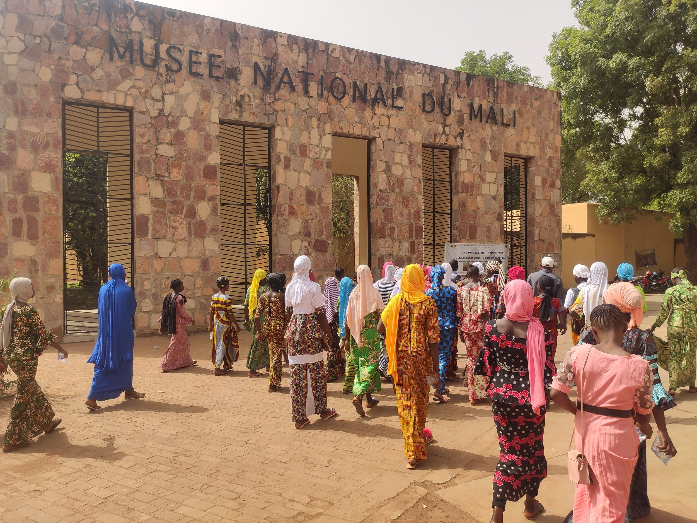
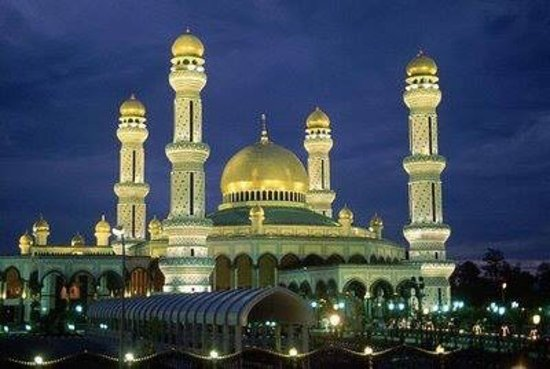
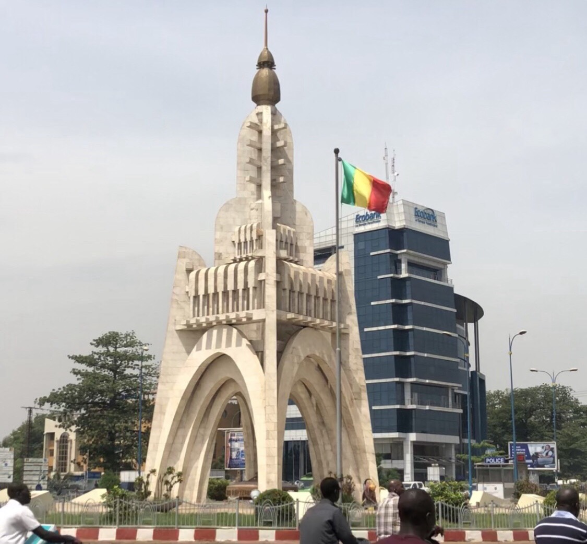

The National Museum of Malí (French: Musée national du Mali) is an archaeological and anthropological museum located in Bamako, the capital of Mali. It presents permanent and temporary exhibits on the history of Mali, as well as the musical instruments, dress, and ritual objects associated with Mali's various ethnic groups .

The Bamako Grand Mosque (French: Grande Mosquée de Bamako) is one of the main religious and architectural landmarks in Mali’s capital. Built in the 1970s with funding from Saudi Arabia, it stands out in the city center with its twin minarets, pale concrete exterior, and large prayer hall. Although it is a functioning place of worship, travelers often admire it from the outside because of its scale and its role in Bamako’s skyline.

The Monument de l'Indépendance stands as a powerful symbol of Mali's independence, achieved on September 22, 1960. Erected to mark the end of colonial rule, the monument embodies the nation's sovereignty and its aspirations for the future. The monument's architecture reflects a blend of Sudanese and Middle Eastern influences, featuring minaret-shaped cupolas and mihrabs. The names of Mali's heroes of independence are inscribed at its base.The monument is a focal point for national celebrations, particularly on Independence Day when Malians gather to commemorate their freedom. The surrounding area provides a vibrant atmosphere where visitors can appreciate Mali's rich cultural heritage. The monument offers opportunities to engage with local vendors and artisans showcasing their crafts. The monument is made of concrete and clad in marble. The golden cupola at the top is made of bronze.Visiting the Monument de l'Indépendance provides insight into Mali's history and the collective memory of its people. It represents the struggle for independence and the hopes of a nation.